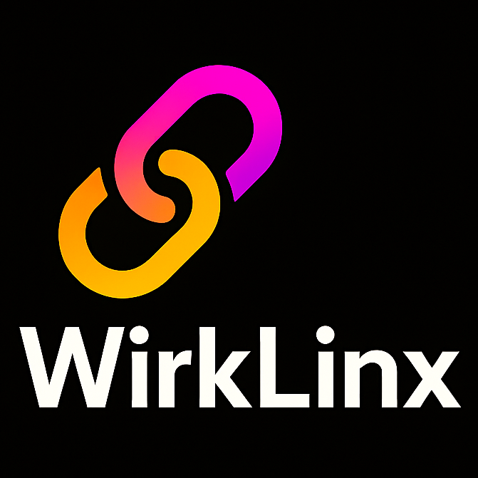

Lead with care
[A principle that guides how you work with people.]

Wirklinx PERSONAL PORTFOLIOA personal corner of the internet
I’m [Your Name] — [your role, craft or a few words about what you do]. This is where my professional world and the things I make for the love of it meet.
I’m interested in how things get built — teams, places, ideas, songs — and what makes them last.
[Write a short biography here: where you’re from, what matters to you, and how your professional life and creative interests fit together. Aim for 3–5 sentences in your own voice.]
More about me[A principle that guides how you work with people.]
[A belief that keeps you learning and trying new things.]
[What meaningful work looks like to you.]
[One sentence about your professional focus — for example, leadership, construction, business, or another field.]
[Organization or company]
[A concise description of your remit, team or impact.]
[Organization or company]
[A concise description of a meaningful milestone or contribution.]
[Organization, education or first step]
[Where the journey began, and what it taught you.]
[What it was, what you contributed, and why it mattered.]
[A short story about the challenge, your role and the result.]
AFTER HOURS, BEFORE THE FIRST NOTE
A space for songs, sounds and the little ideas that keep asking for a melody.
Listen to my musicLife isn’t a sidebar. Here are a few things that keep me grounded, inspired, or happily distracted.
[Why you love it, or what it gives you.]
[A ritual, a favourite kind of day, or somewhere you return to.]
[A current curiosity, a book, a craft, or a question you’re exploring.]
For thoughtful collaborations, music conversations, or just to say hi.
[YOUR EMAIL]